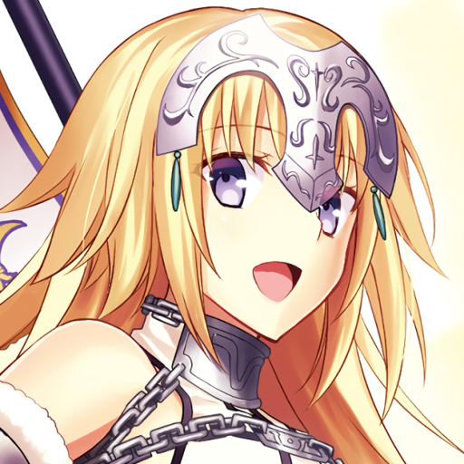
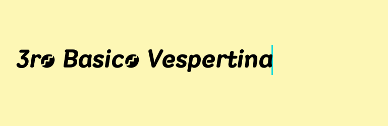
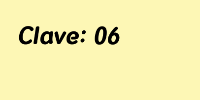
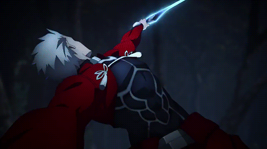
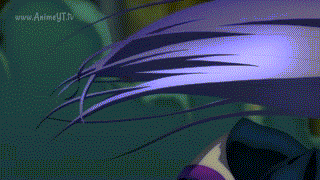

Examen de programacion



Bienvenido a mi examen de programacion
Primero que nada te saludo desde mi casita si entrastes aqui este es mi examen de prograamacion
la verdad nose q contenido poner aqui ya q no se dio un tema solo colocar asi q tratare de poner un tema
para que se mire mas interesante esta pagina asi q hablare de una pelicula llamada; Fate stay night HF

Fate stay night Heaven's feel
Sinopsis de Fate/Stay Night: Heaven’s Feel
La Guerra del Santo Grial: una batalla violenta entre magos en la que siete masters y sus servants luchan por el Santo Grial, un artefacto mágico que puede otorgarle al vencedor cualquier deseo. Hace casi 10 años, la batalla final de la Cuarta Guerra del Santo Grial causó estragos en la ciudad de Fuyuki y se cobró más de 500 vidas, dejando la ciudad devastada.
Shirou Emiya, un sobreviviente de esta tragedia, aspira a convertirse en un héroe de la justicia como su salvador y padre adoptivo, Kiritsugu Emiya. A pesar de ser solo un estudiante, Shirou es arrojado a la Quinta Guerra del Santo Grial cuando accidentalmente ve una batalla entre servants en la escuela y convoca a su propio servant, Saber.
Cuando una sombra misteriosa comienza una ola de asesinatos en la ciudad de Fuyuki, Shirou se alía con Rin Toosaka, una compañera participante en la Guerra del Santo Grial, para detener las muertes de innumerables personas. Sin embargo, los sentimientos de Shirou por su amiga cercana Sakura Matou lo llevan a profundizar en los oscuros secretos que rodean la guerra y las familias involucradas

